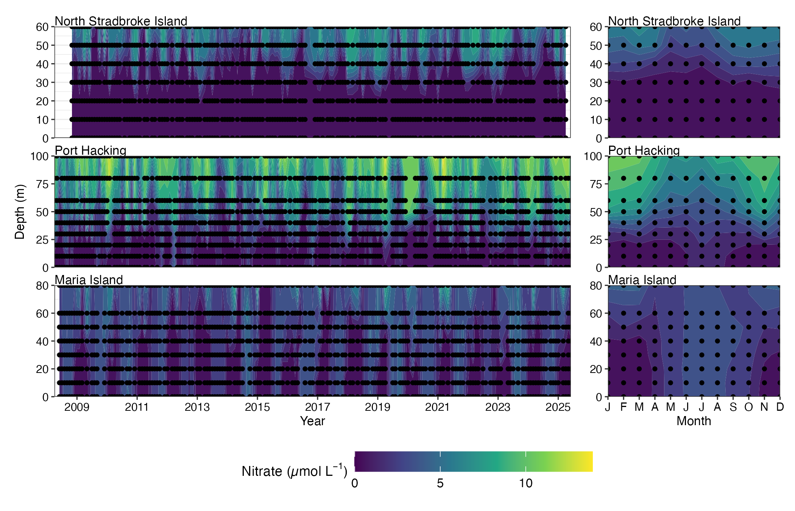
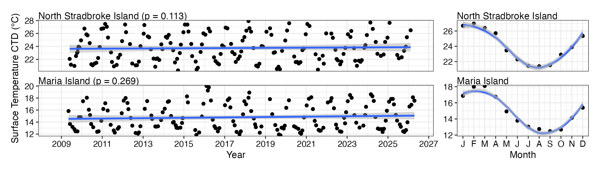
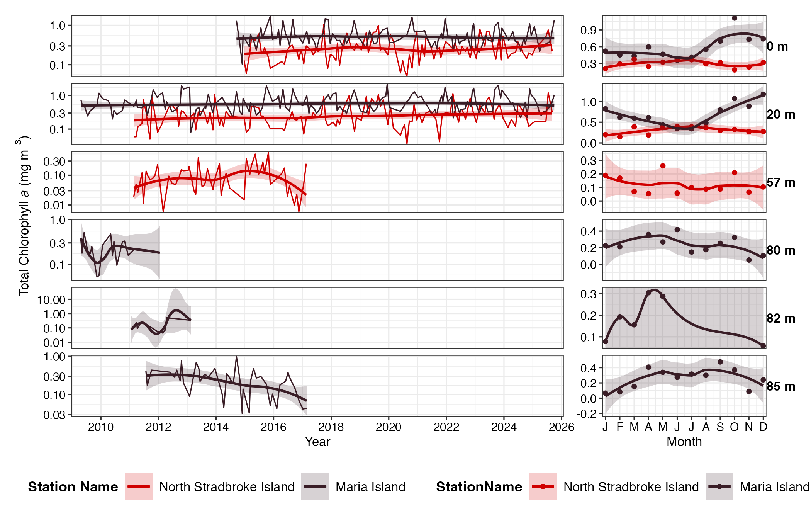
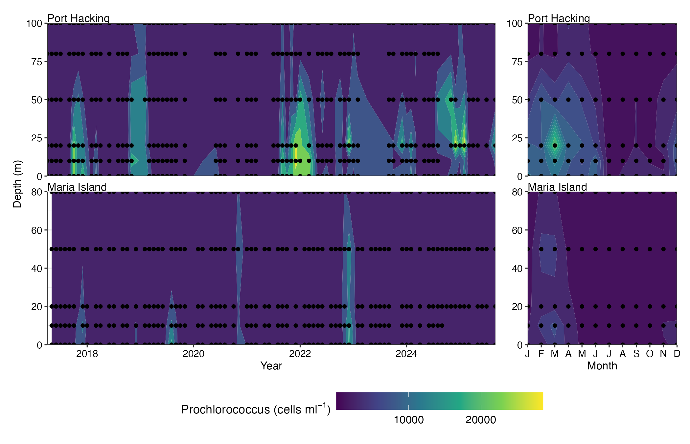

Nutrients at National Reference Stations
Explore the data and see what parameters are available for plotting at which stations. Note that Oxygen data is only available for Maria Island and Rottnest Island.
Nuts <- pr_get_NRSEnvContour("Chemistry")
unique(Nuts$Parameters)
#> [1] "Silicate_umolL" "Phosphate_umolL" "Ammonium_umolL"
#> [4] "Nitrate_umolL" "DIC_umolkg" "Alkalinity_umolkg"
#> [7] "Salinity" "NOx_umolL" "DIN_umolL"
#> [10] "Redfield" "Nitrite_umolL" "Oxygen_umolL"
unique(Nuts$StationName)
#> [1] Darwin Esperance Kangaroo Island
#> [4] Maria Island Ningaloo North Stradbroke Island
#> [7] Port Hacking Rottnest Island Bonney Coast
#> [10] Yongala
#> 10 Levels: Darwin Yongala Ningaloo North Stradbroke Island ... Maria IslandHere we use a contour plot to visualise Nitrate at the east coast stations. This function can be used with raw data, interpolated data and with gap filled interpolated data. The maxgap attribute in only valid when Fill_NA is true. The highest nitrate levels occur at depth in Port Hacking and can be seen to be lowest in the winter months.
Nuts <- pr_get_NRSEnvContour("Chemistry") %>%
filter(StationCode %in% c("NSI", "PHB", "MAI")) %>%
filter(Parameters %in% "Nitrate_umolL") %>%
mutate(name = as.factor(.data$Parameters)) %>% #TODO Check
drop_na()
pr_plot_NRSEnvContour(Nuts, na.fill = TRUE)
CTD data from National Reference Stations
Using “Water” in the pr_get_Indices function will get the parameters associated with the water body at the time of sampling. The parameters starting CTD are mean values over the top 10m of the water column.
CTD <- pr_get_Indices("NRS", "Water")
unique(CTD$Parameters)
#> [1] "Secchi_m" "MLDtemp_m" "MLDsal_m"
#> [4] "DCM_m" "CTDTemperature_degC" "CTDSalinity_PSU"
#> [7] "CTDChlaF_mgm3"As you would expect if we plot the surface temperature at North Stradbroke it is significantly warmer than that at Maria Island. Both seem reasonably stable over the plotting period with very similar seasonal trends.
CTD <- pr_get_Indices("NRS", "Water") %>%
filter(Parameters == "CTDTemperature_degC") %>%
filter(StationCode %in% c("NSI", "MAI"))
p1 <- pr_plot_Trends(CTD, Trend = "Raw", method = "lm", trans = "identity")
p2 <- pr_plot_Trends(CTD, Trend = "Month", method = "loess", trans = "identity") +
ggplot2::theme(axis.title.y = ggplot2::element_blank())
p1 + p2 + plot_layout(widths = c(3, 1), guides = "collect")
Pigments at National Reference Stations
The pigments are available as binned or raw. The binned version provides the data as Totals of the major pigment components, the raw data is the values of the individual pigments measured. The collection of pigments has varied over the course of the sampling program, the surface and 20m samples are the most consistently sampled. You may want to round the depths for a neater plot.
Pigs <- pr_get_NRSPigments(Format = "binned") %>%
pr_remove_outliers(2) %>%
filter(Parameters == "TotalChla") %>%
filter(StationCode %in% c("NSI", "MAI"))
(p <- pr_plot_Enviro(Pigs, Trend = "Smoother", trans = "log10") & theme(legend.position = "bottom"))
Picophytoplankton at National Reference Stations
The contour plots are a neat way to visualise the picoplankton from the NRS stations. The data can be viewed as raw, interpolated or interpolated with gap filling.
Pico <- pr_get_NRSEnvContour("Pico") %>%
dplyr::filter(Parameters %in% c("Prochlorococcus_cellsmL")) %>%
filter(StationCode %in% c("PHB", "MAI"))
pr_plot_NRSEnvContour(Pico, na.fill = TRUE)